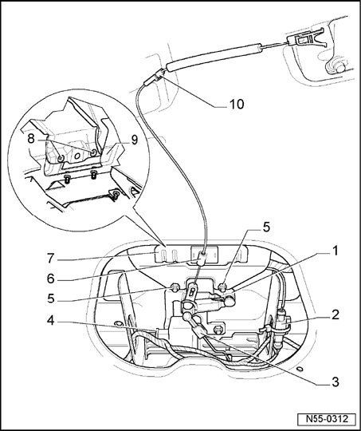

Locking And Unlocking Components, Removing and Installing
Locking And Unlocking Components, Removing And Installing
Removing
- Remove tailgate trim

- Harness connectors -2- and -4- must be disconnected.
- Disengage bracket -6- from anti-theft protection -7- and unhook release -10- of emergency release lever from actuator lever -1-.
- Disconnect operating rod -3- from actuator lever -1- and unscrew the three hex nuts -5-.
- Remove anti-theft protection -7- and remove bolts -8- for push-button -9-.
- Now, push-button -9- can be removed from outside.
Installing
Installation is performed in the reverse order of removal.